器材库 > 35mm画幅可换镜头数码相机 > D610
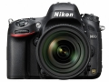
规格总览
产品类型
35mm画幅可换镜头数码相机
发布日期
2013-10-08
厂家推荐价格
200,000.00 （日元）
影像规格
影像传感器
CMOS
影像传感器尺寸
35.9×24.0mm
总像素
2466万
有效像素
2426万
影像处理器
EXPEED 3
最大解像度
6016 x 4016
静态图像尺寸
FX：6,016 x 4,016 (L) 4,512 x 3,008 (M) 3,008 x 2,008 (S)；DX ：3,936 x 2,624 (L) 2,944 x 1,968 (M) 1,968 x 1,312 (S)
静态图像格式
NEF(RAW), NEF(RAW)+JPEG
静态图像质量
NEF （RAW）：12 位或14 位无损压缩、压缩或未压缩；JPEG：兼容JPEG-Baseline，压缩比（约）为精细（1 : 4）、标准（1 : 8）或基本（1 : 16）（文件大小优先）
画幅比
3:2, 16:9, 5:4
短片尺寸
1920×1080 ；30p（逐行）、25p、24p • 1280×720 ；60p、50p、30p、25p 60p、50p、30p、25p 及24p
短片格式
MOV, MPEG4-AVC/H.264
除尘系统
清洁图像传感器、图像除尘参考数据（需要另购的Capture NX 2 软件）
镜头和对焦
镜头卡口
Nikon F
兼容镜头
兼容AF 尼克尔镜头，包括G 型和D 型镜头（PC 微距尼克尔镜头受到某些限制）、DX 镜头（使用DX24 × 16 1.5 ×图像区域）、AI-P 尼克尔镜头以及非CPU AI 镜头（仅限于曝光模式A 和M）。
对焦系统类型
Multi-CAM 4800 TTL 相位侦测
对焦点
39个对焦点（9个十字型感应器，光圈f/8 时支持7 个感应器）
对焦模式
自动对焦（AF）：单次伺服AF（AF-S）；连续伺服AF（AF-C）；自动AF-S/AF-C 选择（AF-A）；根据拍摄对象的状态自动启用的预测对焦跟踪；手动对焦（M）：可以使用电子测距仪
AF辅助灯
有
手动对焦
支持
曝光控制
测光系统
2016 像素RGB 感应器的TTL 曝光测光
测光模式
中央重点测光, 点测光
测光范围
矩阵或中央重点测光：0-20EV~点测光：2-20EV
曝光模式
P（程序自动曝光）, A（光圈优先自动曝光）, S（快门速度优先自动曝光）, M（手动测光曝光）
场景模式
夜景, 海景及雪地, 食物, 儿童, 宠物, 烛光, 日落, 人像, 风景, 运动, 夜间人像, 鲜花, 近摄, 宴会/室内, 黄昏/黎明, 秋色, 高色调, 低色调
快门类型
电子控制，纵走式，焦平面快门
快门速度
1/4000-30 秒（以1/3 或1/2EV 步长进行微调）、B 门、遥控B 门（需要另购的ML-L3 遥控器）、X200
曝光补偿
±5EV以1/3或1/2或1EV级调整
自动曝光锁
有
自动包围曝光
拍摄2 至3 幅，以1/3、1/2、2/3、1、2 或3EV 为步长进行微调
ISO感光度
自动, 可扩展至50-25600, 以1/3、1/2 或1EV 为步长在ISO 100-6400 之间进行微调, 可扩展至50-25600
白平衡
白炽灯, 闪光灯, 色温调节, 阴天, 荧光灯, 自定义, 阴影, 自动, 预设白平衡, 晴天
自拍
10秒, 2秒, 5秒, 20秒, 以0.5、1、2 或3 秒为间隔曝光1~9 次
连拍
约1 至5fps（CL）、6fps（CH）或 3fps（Qc）
闪光灯
内置闪光灯
弹出式
闪光模式
TTL
闪光指数
12
闪光补偿
-3 至 +1EV以1/3、1/2或1EV级调整
闪光同步模式
前帘同步, 后帘同步, 慢速同步, 防红眼同步, 防红眼慢速同步
外接闪光灯
SB-910、SB-900、SB-800、SB-700、SB-600 或SB-400
取景器/显示屏
取景器
眼平五棱取景器
取景范围
100%
取景放大倍率
0.7倍
屈光度调节范围
-3至+1 m-1
景深预视
有
LCD类型
彩色TFT LCD
LCD尺寸
3.2英寸
LCD像素
92.1万
视野率
100%
Live View
有
Live View 对焦模式
自动对焦（AF）：单次伺服AF（AF-S）；全时伺服AF（AF-F）；手动对焦（M）
文件输入/输出
存储卡
SD/SDHC, SDXC
数据接口
高速USB
视频/音频接口
HDMI Mini 输出
电源
电池
一块EN-EL15 锂离子可充电电池；另购的MB-D14 多功能电池匣可容纳1 块尼康EN-EL15 锂离子可充电电池或6 节AA 碱性电池、镍氢电池或锂电池。
外接电源
EH-5b 电源适配器；需要EP-5B 照相机电源连接器（另购）
机身规格
颜色
黑色
尺寸
141×113×82mm
重量
760g
其它
配件端口
热靴, 脚架螺丝孔
支持语言
中文（简体）, 中文（繁体）, 英语, 日语, 捷克语, 丹麦语, 荷兰语, 芬兰语, 法语, 德语, 印度尼西亚语, 意大利语, 韩语, 挪威语, 波兰语, 葡萄牙语, 俄语, 西班牙语, 瑞典语, 土耳其语, 泰语, 阿拉伯语, 乌克兰语, 罗马尼亚语
工作温度
0-40℃
工作湿度
低于85%
附件
带端子盖的EN-EL15锂离子充电电池、MH-25充电器（仅有需要的国家或地区供应家用直流电适配器）、相机带（D800，AN-DC6；D800E，AN-DC6E）、USB线UC-E14、USB线夹、机身盖BF-1B、热靴盖BS-1、显示屏盖BM-12、ViewNX 2安装光盘
匿名网友2019-03-19 23:434.13 分
操作性 4.00功能性 3.50美观性 4.50趣味性 4.50耐用性 5.00性价比 5.00解像力 3.50色彩还原 3.00
hassiue2018-03-06 21:334.69 分
操作性 4.50功能性 4.50美观性 5.00趣味性 5.00耐用性 4.00性价比 5.00解像力 4.50色彩还原 5.00
charmyanghong2018-02-08 15:154.44 分
操作性 4.00功能性 4.50美观性 4.50趣味性 4.50耐用性 4.50性价比 4.50解像力 4.50色彩还原 4.50
zhzqq0072017-05-04 23:164.75 分
操作性 4.50功能性 5.00美观性 4.50趣味性 4.50耐用性 4.50性价比 5.00解像力 5.00色彩还原 5.00
shengxcx2016-06-30 16:084.31 分
操作性 5.00功能性 5.00美观性 3.00趣味性 4.00耐用性 4.00性价比 4.50解像力 4.50色彩还原 4.50
David19192015-04-16 10:324.81 分
操作性 4.50功能性 4.50美观性 4.50趣味性 5.00耐用性 5.00性价比 5.00解像力 5.00色彩还原 5.00
YYQ南山客2014-10-29 11:204.81 分
操作性 5.00功能性 5.00美观性 4.50趣味性 4.50耐用性 4.50性价比 5.00解像力 5.00色彩还原 5.00
Laodaohgw2014-09-16 10:494.94 分
操作性 5.00功能性 5.00美观性 5.00趣味性 4.50耐用性 5.00性价比 5.00解像力 5.00色彩还原 5.00
tlx662014-09-15 21:524.94 分
操作性 5.00功能性 5.00美观性 4.50趣味性 5.00耐用性 5.00性价比 5.00解像力 5.00色彩还原 5.00
YYQ南山客2014-05-06 11:384.69 分
操作性 4.50功能性 4.50美观性 4.50趣味性 4.50耐用性 4.50性价比 5.00解像力 5.00色彩还原 5.00
YYQ南山客2014-05-01 16:04
mztwyw2014-03-22 02:434.44 分
操作性 4.00功能性 4.50美观性 4.00趣味性 4.00耐用性 4.00性价比 5.00解像力 5.00色彩还原 5.00
洛亦2014-03-17 14:494.81 分
操作性 5.00功能性 4.50美观性 5.00趣味性 5.00耐用性 4.50性价比 5.00解像力 4.50色彩还原 5.00
3llltoronto2013-12-09 04:524.63 分
操作性 5.00功能性 5.00美观性 4.50趣味性 4.50耐用性 4.50性价比 4.50解像力 4.50色彩还原 4.50
knopfler2013-11-26 00:214 分
操作性 4.50功能性 4.50美观性 3.50趣味性 3.50耐用性 4.50性价比 3.50解像力 4.00色彩还原 4.00
duzhongcha2013-11-08 00:184.56 分
操作性 4.50功能性 5.00美观性 4.50趣味性 4.50耐用性 4.50性价比 4.50解像力 4.50色彩还原 4.50
产品图 / 样片
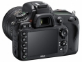
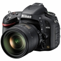
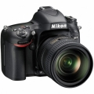
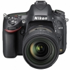
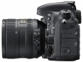
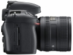
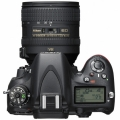
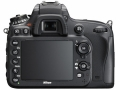
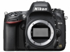
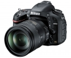
评测 / 相关文章
- 详细内容 （存档）
- ［试用］尼康D610海外简评 （存档）
- ［资讯］5款尼康产品获得“2013最佳设计大奖” （存档）
- ［资讯］尼康最新FX格式数码单反D610样张欣赏 （存档）
- ［行情］为迎接D610到来？尼康D600历史新低 （存档）
相关文章
- ［试用］尼康D610海外简评 （存档）
- ［资讯］5款尼康产品获得“2013最佳设计大奖” （存档）
- ［资讯］尼康最新FX格式数码单反D610样张欣赏 （存档）
- ［行情］为迎接D610到来？尼康D600历史新低 （存档）
- ［资讯］尼康D610 （存档）
- ［行情］尼康D610机身再现低价 （原站已下线）
- ［试用］发烧在路上 用尼康拍人像 （原站已下线）
- ［资讯］尼康发布多款机身升级固件 （原站已下线）
- ［行情］尼康入门级全画幅D610降价 （原站已下线）
- ［资讯］谁是长曝王 各家机型高ISO长曝控躁PK （存档）